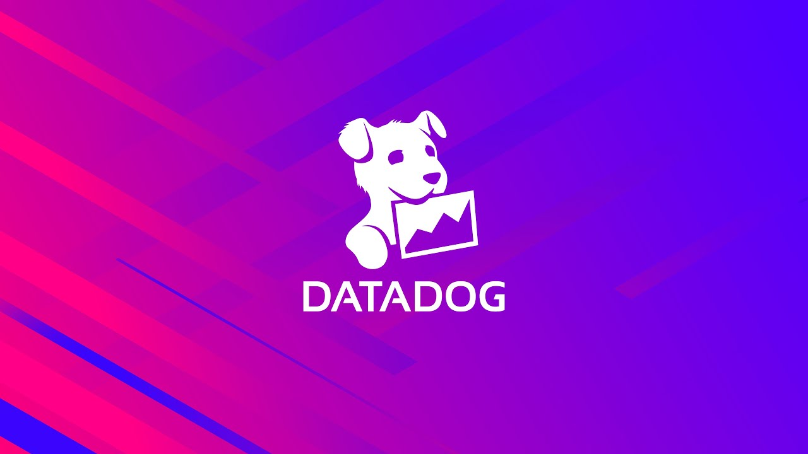

About

Hi, my name is Utkarsh Bansal and I am currently a student at Georgia Tech majoring in Computer Science under the Intelligence and Info Internetworks threads. Some of my coursework includes Discrete Mathematics, Data Structures + Algorithms, Linear Algebra, and Multivariable Calculus to name a few. My enthusiasm for technology is not just limited to academic pursuits; I actively engage in innovative research projects and have an avid interest in the fields of quantitative analysis, finance, and software engineering. Additionally, I am involved in a variety of activities both on and off-campus, such as the GT Student Investments Fund, Big Data Big Impact, Google Student Developer Club, and the GT Undergraduate Consulting Club. When I step away from the computer, you can find me enjoying various hobbies such as weightlifting, exploring new TV series, competing in basketball, and playing the guitar. Thanks for reading!
Experience

Security Engineer Intern - Datadog (May 2025 - August 2025)

Software Engineer Intern - General Dynamics IT (June 2024 - August 2024)
- Developed Python automation scripts in PowerShell to identify & retrieve installed software across machines, cross- referencing with over 450,000 CVE vulnerabilities from NIST databases to detect potential threats & push patches.
- Engineered a dual Windows-Linux environment using Ubuntu & WSL to reduce potential attack surfaces by 12%.

Data Engineering Intern - OCEUS Networks (June 2022 - August 2022)
- Engineered a robust asset tracking database and inventory management system on a Linux OS, leveraging HTML, CSS, and PHP to deliver a streamlined, user-friendly interface for real-time tracking and efficient data retrieval.
- Developed end-to-end data pipelines to support seamless asset visibility and operational accuracy for a high-demand client, ensuring reliable data flows across the system and optimizing database queries for peak performance.
- Designed the system with scalability and security in mind, allowing for future expansion and quick adaptability to evolving client requirements.

Technical Intern - Applied Impact Robotics (June 2021 - August 2021)
- Developed a commercially-applicable robotics solution to inspect oil tanks.
- Utilized sensory software and CAD to model parts for small-scale prototypes.
- Leveraged Excel and RVIZ to monitor prototype efficiency and other metrics.
Research
Undergraduate Research Assistant at Georgia Tech
- Conducting research with Dr. Kai James on the computational analysis & design of cross-flow thermal heat exchangers using topology optimization
- Leveraging PyTorch, TensorFlow, OpenFOAM, & C++ to develop a Convolutional Neural Network in Jupyter Notebook within the high-performance PACE Cluster for enhanced location detection & optimized thermal system simulations.
- Processing 15+ CFD features to produce accurate quantitative predictions of fluid-flow phenomena in OpenFOAM simulations.
Blockchain Research Intern at Georgetown University
- Assisted Dr. Shin’ichiro Matsuo in researching the plausibility of Central Bank Digital Currencies in the U.S in advisement to the Blockchain Governance Initiative Network (BGIN).
- Invited to present the findings at multiple conferences and received a grant from the National Science Foundation (NSF).
- Conducted a second research project on the environmental impact of Bitcoin using Python-based web scraping and relevant libraries.
- Published the quantitative findings in the SSRN Academic Journal, where it ranked in the Top 10 of its category for 9 weeks.
- Read Publication Here.
Research Intern at George Mason University
- Collaborated with Dr. Sarah Wittman on quantitatively determining the impact of experiential learning styles within the education sector.
- Utilized statistical analysis tools and JavaScript within the collected datasets.
- Read Publication Here.
Projects
NLP Sign-Language Classification Model (October 2023 - Present)
- Spearheading the development of a real-time sign language classification model utilizing Natural Language Processing (NLP) and Computer Vision (CV), designed to bridge communication between deaf individuals and non-sign language users.
- Focused on enhancing model accuracy and responsiveness, achieving a 35% improvement in prototype accuracy to ensure seamless, fluid interactions in real time.
Stock Sentinel – AI-Powered Stock Screener & Sentiment Analyzer (May 2024 - August 2024)
- Engineered a stock screener using Python, Pandas, NumPy, and finvizfinance, filtering 500+ stocks daily to identify undervalued opportunities based on several financial metrics.
- Integrated AI-driven sentiment analysis using FinBERT to analyze 1,000+ financial news articles per week, providing real-time quantified sentiment scores for each stock.
- Enhanced investor insights by automating CSV generation for each ticker, capturing sentiment trends and market perspectives to inform investment strategies.
WrappedSync (January 2024 - May 2024)
- Developed a Spotify-wrapped app using Android Studio that integrates dynamic music visualizations using an LLM API to show personalized correlations between music taste & listening activity with friends & a community of 150+ users.
- Designed OAuth2-based user authentication with FireBase & Google Sign-in for users to access & browse past wraps.
BuzzPlanner (November 2023 – April 2024)
- Designed & built a college scheduler app named BuzzPlanner for classes, assignments, & exams with Android Studio, Java, Kotlin, Python, & FireBase to help 500+ Georgia Tech students manage their academic schedules.
- Implemented a custom schedule conflict detection algorithm utilizing FireBase FireStore to reduce scheduling errors by over 40% & integrated push notifications using Cloud Messaging to remind students of their saved items & campus events.
My Personal Website (November 2023 – December 2023)
- Created a personal portfolio website from scratch using a blend of JavaScript, CSS, and HTML with server-to-server encryption and integrated a third-party contact form with ReCAPTCHA services.
Activities
Georgia Tech Big Data Big Impact
Senior Project Developer
- Leading the development of an NLP Sign-Language Classification Model using NLP & OpenCV to enable seamless interactions between deaf individuals & non-sign language users, enhancing model accuracy & responsiveness by over 20%.
- Driving the integration of real-time video processing features in collaboration with a team of 8 developers, leveraging PyTorch and OpenCV to deliver 15% lower latency and cross-platform support on Android, iOS, Windows, and macOS.
Georgia Tech Undergraduate Consulting Club (UCC)
Senior Pro-Bono Analyst
- Involved in a pro-bono project for an Atlanta-based blockchain startup, communicating directly with their C-Suite for strategic planning and market analysis in Fall 2024.
- Currently implementing Gen-AI strategies for DC-BLOX’s data centers to modernize infrastructure & operations management, utilizing AI/ML-driven maintenance solutions to achieve 7% annual reductions in energy consumption & associated costs.
Georgia Tech Investments Committee
Technology Analyst
- Managing GTSF’s $2.5M AUM with a focus on the Technology sector, conducting market trend analysis & developing financial models to guide investment decisions following the completion of a rigorous semester mentorship program.
The Disaster Awareness Group
Co-Founder
- Co-founded an environmental-media nonprofit aimed at raising awareness and monetary aid for natural disasters globally.
- Grew the organization to 85 active student volunteers nationwide and key partnerships with companies like HackX.
- Responsible for overseeing finances, 501(c)3 paperwork, and new directorial and partnership initiatives.
- Recipient of the George H.W. Bush Foundation's Points of Lights award and were featured by multiple news outlets.
Contact